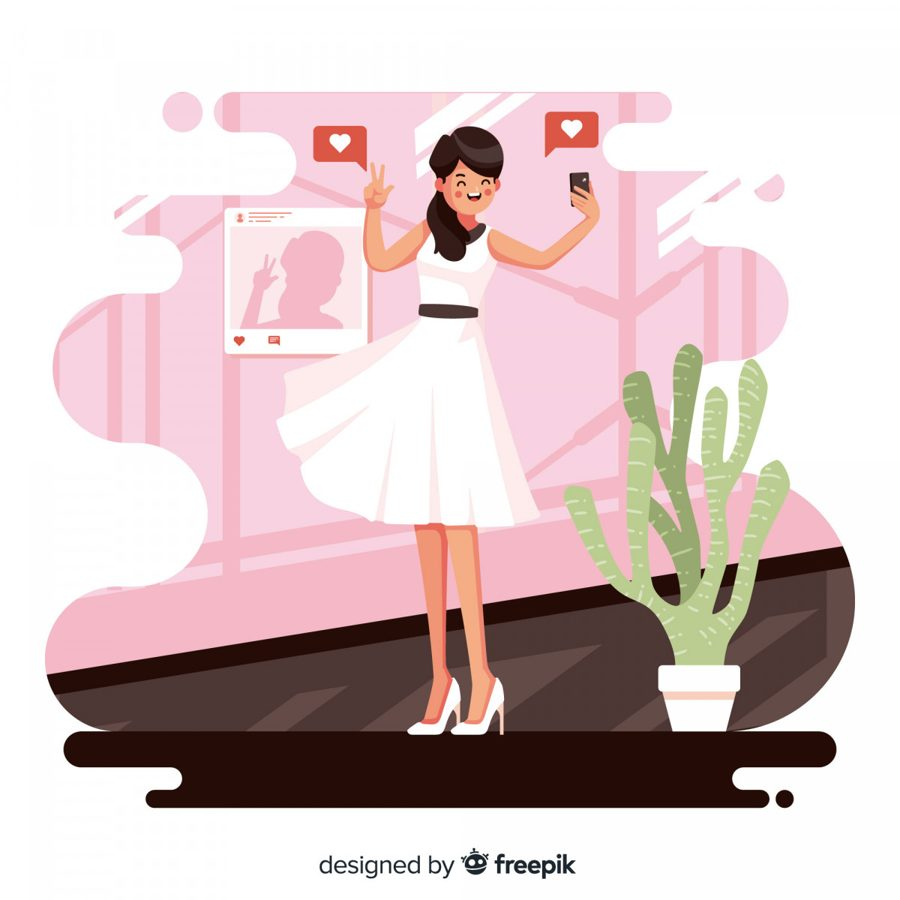

Бывают дни, когда, листая ленту соцсетей, вы словно попадаете в параллельную вселенную. Там царит жизнь, которую вы видите в глянцевых журналах: идеальные путешествия, где даже песок на пляже будто уложен по линейке; карьерные взлёты, от которых захватывает дух; трогательные семейные истории с идеально подобранными фильтрами. И даже если в твоей собственной жизни всё более-менее благополучно, внутри шевельнётся знакомый червячок сомнения: «А я? Почему у меня не так?»
Мы живём в мире, где сравнение стало рефлекторным движением души. Наш мозг, тысячи лет назад устроенный для выживания в племени, до сих пор сканирует окружение, задавая древние вопросы: «Я в безопасности? Я достаточно хорош, чтобы меня приняли?». Только теперь вместо вождя племени у нас бесконечная лента в соцсетях, а вместо одобрения соплеменников - лайки и комментарии. И этот древний механизм, когда-то спасавший, теперь истощает, заставляя нас постоянно сверять свои координаты с чужими.
Но давайте на минуту представим соцсети как огромную выставку картин. Каждая жизнь - это отдельное полотно. Мы видим лишь готовую, законченную работу, повешенную при идеальном освещении. Мы не видим, как художник мучился над эскизами, сколько холстов отправил в угол в отчаянии, как стирал краску и начинал заново. Мы не видим сомнений, усталости, слёз или обычных бытовых долгов, оставшихся за рамками. Мы видим только финальный, отретушированный кадр.
Ваша жизнь - это не соревнование на звание «Самой Успешной Версии Человека». Это уникальный путь, больше похожий не на скоростную трассу, а на лесную тропинку. У неё своя скорость: иногда ты бежишь, иногда останавливаешься, чтобы перевести дух у ручья. У неё свои повороты, не всегда понятные со стороны, и свои виды, которые открываются только тебе. И измерять свой лесной путь километрами, пройденными кем-то по шоссе, - всё равно что сравнивать аромат сосны с запахом асфальта.
Но что же делать, когда рука снова тянется к телефону за новой порцией сравнения?
В такие моменты помогает не запрет («не думай об этом»), а мягкое, но чёткое перенаправление внимания. Практика «Возврат к себе» - это как внутренний якорь, который не даёт унести тебя в океан чужих достижений.
Шаг 1: Сделать паузу.
Это самый важный и самый сложный момент. Как только ловите себя на мысли «а вот у него / неё...», просто остановитесь. Закройте ленту, отложите телефон. Сделайте три глубоких, медленных вдоха и выдоха. Почувствуйте, как воздух наполняет вас здесь и сейчас, а не в том виртуальном мире, куда только что смотрели ваши глаза.Шаг 2: Задать себе три честных вопроса.
Не «правильных», а именно честных.- Что я сейчас чувствую на самом деле? Зависть? Грусть? Давление? Обиду на себя за то, что «не дотягиваю»? Просто назовите это чувство, не осуждая. Это уже снимет часть напряжения.
- Что для меня важно в этот самый момент моей жизни? Не вообще, а сейчас. Возможно, не «покупать квартиру», а «выспаться». Не «строить блестящую карьеру», а «закончить один конкретный проект». Не «быть идеальной», а «побыть в тишине».
- Где проходит граница между «я хочу» и «я должна» в этой ситуации? «Я должна быть такой же успешной, как она» или «Я хочу отдохнуть и не корить себя за это»? Это вопрос о твоём выборе и твоей свободе.
Шаг 3: Заземлиться в теле.
Мысли уносят в прошлое или будущее, в чужие жизни. Тело всегда здесь. Положите ладонь на грудь или на живот. Спросите себя: «Что здесь происходит?». Может, вы ощутите тепло, лёгкое сжатие, пульсацию. Просто побудьте с этим ощущением минуту-другую, как будто утешая самого близкого человека - себя.Шаг 4: Перенаправить фокус.
Возьмите ту самую мысль, которая запустила сравнение, и мягко переведите её в своё поле.Было: «Она купила квартиру, а у меня своей всё ещё нет».
Стало: «У неё есть квартира. А у меня есть сегодняшний вечер, моя любимая чашка чая, мой кот, мурлыкающий на коленях, и мои планы на завтра, которые зависят только от меня. И это - моя реальность. Она другая, но она тоже имеет ценность».
Эта практика - не волшебная таблетка, но это хорошая тренировка внимания. Ыы не запрещаете себе замечать чужую яркость. Вы учитесь, заметив её, не терять при этом из виду собственную тропу, свой свет, свои, пусть и скромные, но настоящие огоньки.
И когда вам снова захочется измерить себя чужой линейкой, можно просто напомнить себе: «Я иду своей дорогой. И она - единственная, которая ведёт именно к моей жизни». А все остальные красивые пути ведут куда-то ещё.
Статья подготовлена на основе материалов психологической практики. Если тема откликнулась, вы можете связаться со мной для обсуждения возможности индивидуальной работы.
Статья опубликована на b17.ru.